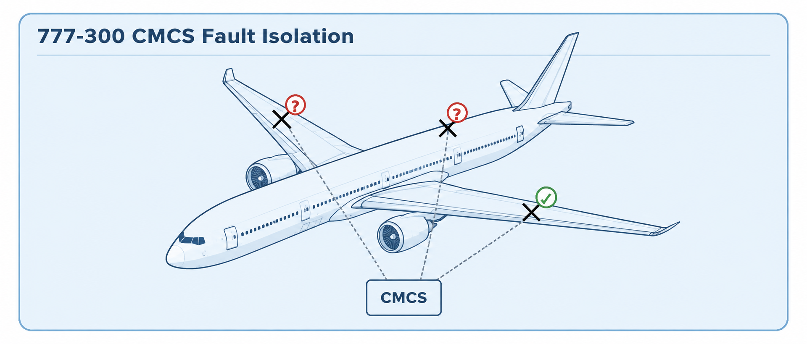

Conceptual portfolio diagram — newly drawn from personally confirmed responsibilities; not a Boeing design artifact.
Aircraft Avionics Integration
Boeing 777-300
Central Maintenance Computer System
Aircraft Fault Modeling • Root-Cause Isolation • Avionics Integration • Production Validation
Supported development and validation of the 777-300 version of Boeing’s established Central Maintenance Computer System (CMCS). Worked with engineers from more than 100 member systems to incorporate changes to the aircraft maintenance fault model into the CMCS database, created and executed validation procedures in the Integrated Avionics Systems Laboratory, troubleshot integration failures, and investigated anomalies reported by the worldwide 777 fleet.
100+ SystemsMember-system engineers coordinated across the aircraft
All Fault CasesIndividual faults plus selected fault combinations validated in the SIL
Fleet SupportWorldwide 777 anomalies investigated and reproduced in integrated test
1.Aircraft-Wide Maintenance Fault Model
More than 100 member systems feeding a common maintenance model
Member Systems100+ aircraft systems
Reportable Faults
Fault Propagation Rules
→
CMCS Databaseimplemented the 777 maintenance fault model
777-300 Revisionstranslated approved member-system changes into database content
→
Maintenance Interpretationfault and dispatch information
Flight Deck & Maintenance Personnel
My role was to work with member-system engineers to determine changes to the baseline 777 fault model, then translate those changes into the CMCS database.
2.777-300 CMCS Fault Isolation
Fault reports from aircraft subsystems converging to CMCS for root-cause isolation

Concept: each marked aircraft fault report is shown feeding CMCS through a dotted reporting path; two reports remain suspect while one is confirmed good, illustrating the need for CMCS fault isolation.
3.777-300 Production Release & Validation
From member-system change through validated software/database release
1. Collect Requirements
Worked with member-system engineers to capture fault-model changes
2. Modify Database
Translated approved changes into CMCS database content
3. Create Test Procedures
Defined validation procedures for changed functionality
4. Execute SIL Tests
Tested every individual fault case and selected fault combinations
5. Troubleshoot Integration
Investigated and resolved integration failures found during validation
6. Production Release
Software and database version released after completion of validation testing
4.Worldwide Fleet Anomaly Investigation
Persistent system-level troubleshooting in the Integrated Avionics Systems Laboratory
1
Fleet anomaly reported. A difficult in-service problem could not readily be reproduced.
2
Months of controlled trial and error in the SIL. Repeatedly recreated candidate aircraft/system conditions while narrowing the failure scenario.
3
Successfully reproduced the anomaly. Established a repeatable integrated-system condition for further investigation.
4
Worked with Honeywell software engineering. Once the behavior could be reproduced, the vendor engineer was eventually able to identify the software bug causing the problem.
◎ RESULT
100+ systemsAircraft-wide maintenance fault-model changes coordinated with member-system engineers
Validated releasesAll individual fault cases and selected combinations tested in the Integrated Avionics Systems Laboratory
Fleet anomaly reproducedA difficult worldwide-fleet problem was recreated after months of SIL investigation, enabling Honeywell software engineering to identify the underlying software bug.